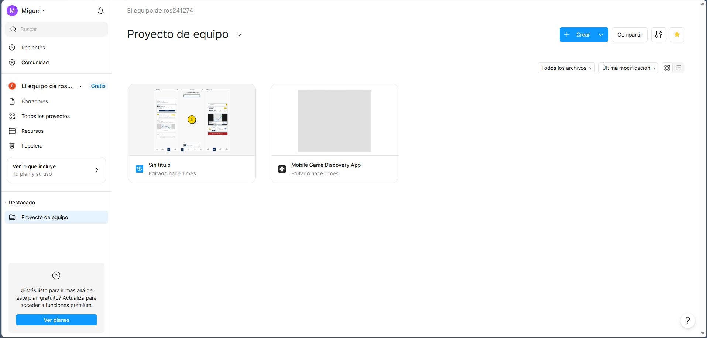

Semana 4
Una UI confusa en Figma
Esta semana me pasó con la interfaz principal de Figma al intentar crear o editar un diseño generado con IA. En la carpeta aparecían juntos mi proyecto normal de Figma Design y el proyecto hecho con Figma Make, como si fueran archivos del mismo tipo.

Lo que más me confundió fue que visualmente los dos proyectos se veían como elementos editables dentro del mismo espacio, pero el de Figma Make no se podía editar igual que el de Figma Design. No aparecía un candado, una alerta o un texto evidente. Perdí aproximadamente una hora intentando entender si el problema era mío, del archivo o del plan.
Consejo de mejora
Creo que Figma debería mostrar un mensaje claro, un candado o una etiqueta visible cuando una función requiere pago o cuando un archivo de Figma Make no se puede editar como uno de Figma Design. Ocultar o no explicar esa diferencia hace que el usuario piense que el error es suyo.